Sobre a cultura da pesca no Brasil
A cultura pesqueira brasileira está profundamente ligada à riqueza das águas que atravessam o país — dos grandes rios e lagos da Amazônia e do Pantanal à extensa costa brasileira 🎣
A pesca faz parte da vida de milhões de brasileiros, seja como atividade de lazer, esporte e contato com a natureza, seja como uma prática tradicional que sustenta famílias e comunidades inteiras. Em regiões como a Amazônia e o Pantanal, ela possui um papel ainda mais importante, preservando conhecimentos e costumes transmitidos de geração em geração.
O Brasil abriga uma impressionante diversidade de espécies, como tucunaré, pirarucu, dourado e inúmeras variedades de bagres, tornando suas águas um destino especial para pescadores de diferentes perfis.
Mais do que simplesmente capturar peixes, a pesca representa conexão com a natureza, convivência em família, aventura, tradição e momentos de tranquilidade. Para muitas comunidades tradicionais, porém, ela vai além do lazer: é uma fonte essencial de alimento, renda e identidade cultural.
Galeria de fotos:
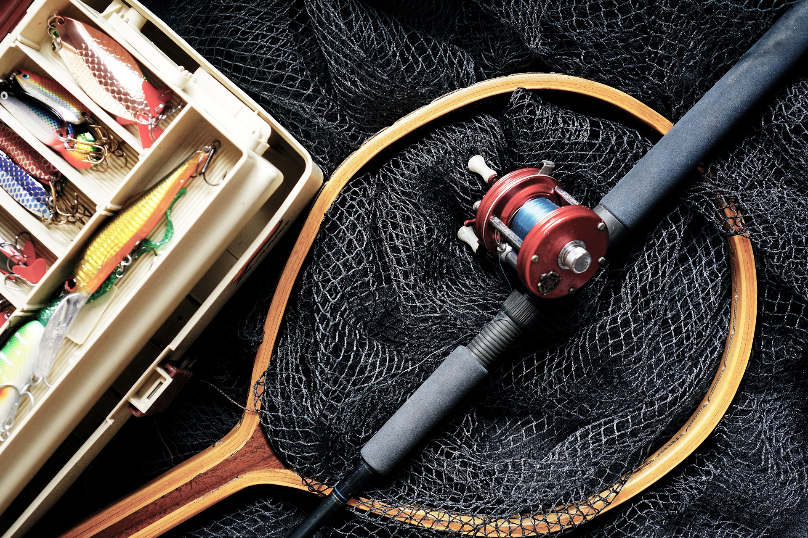
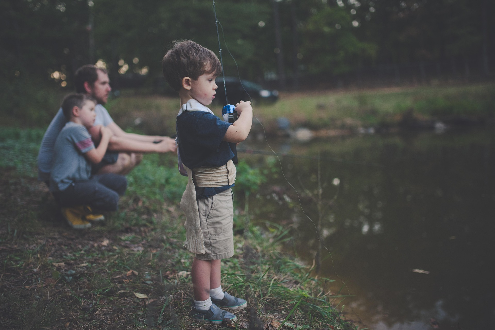
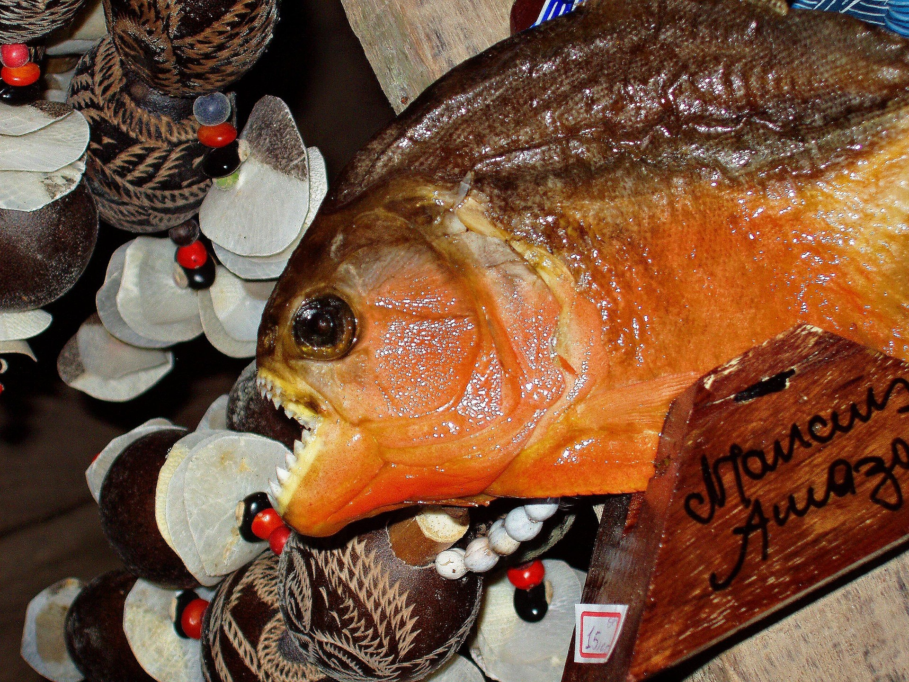
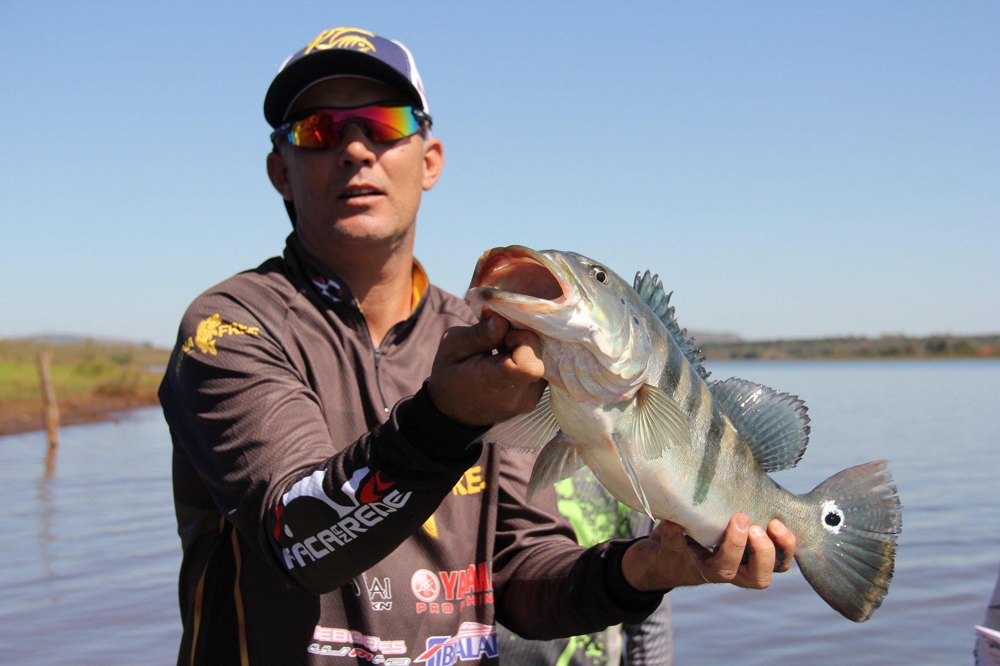
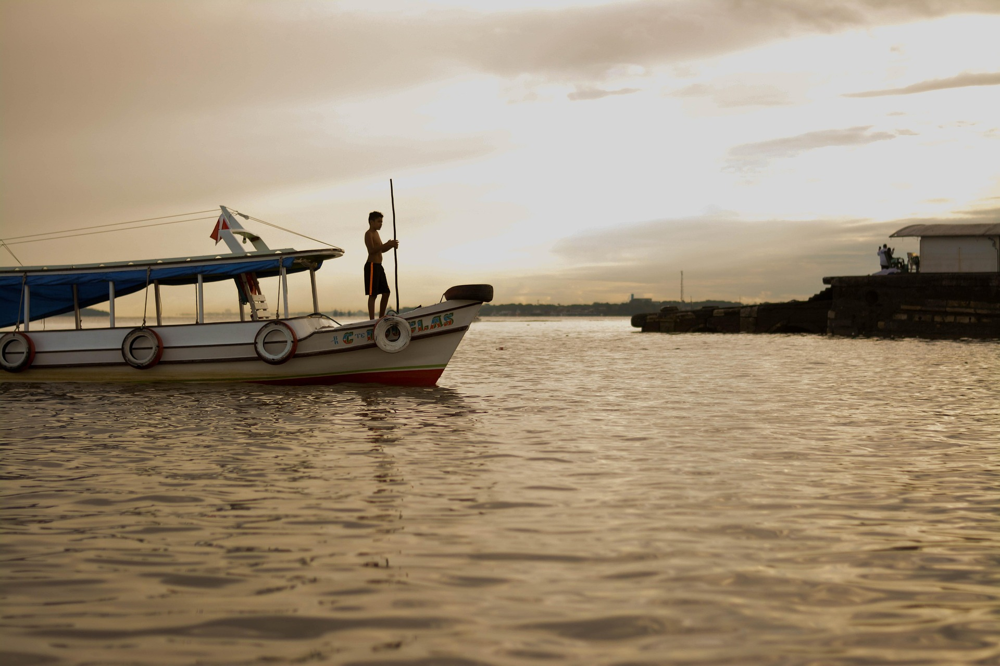
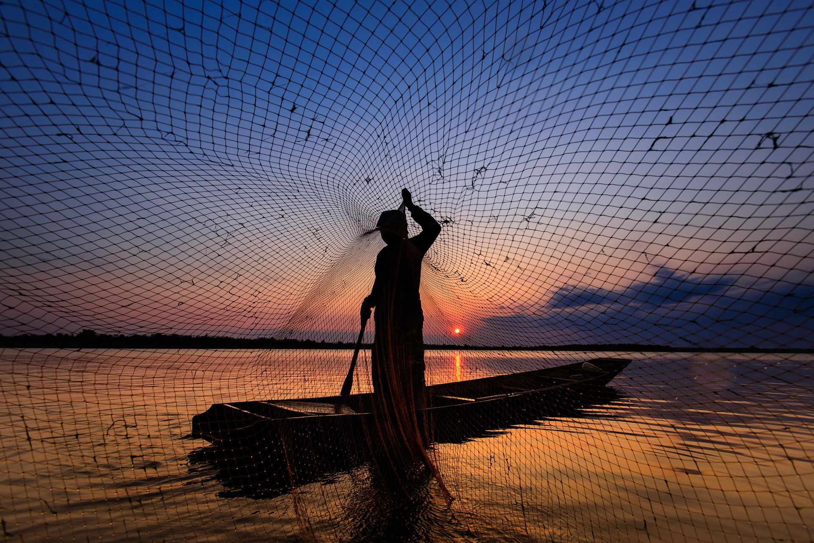
Peixes brasileiros
Tucunaré (Cichla temensis)
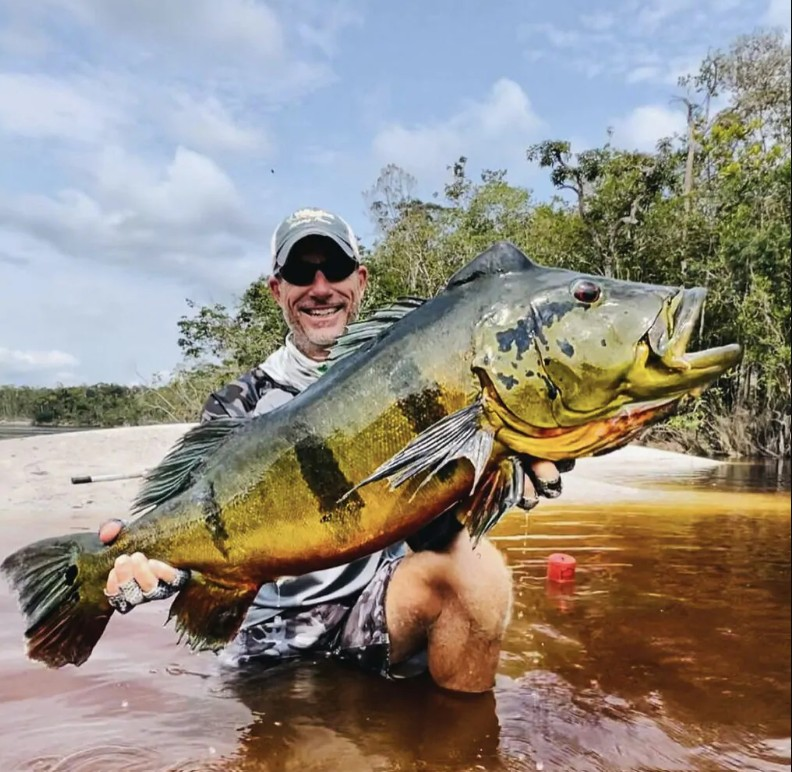
Tambaqui (Colossoma macropomum)
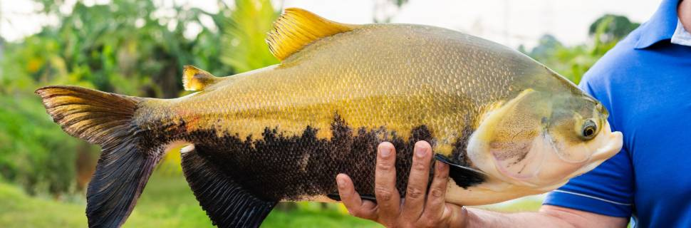
Pintado (Pseudoplatystoma corruscans)
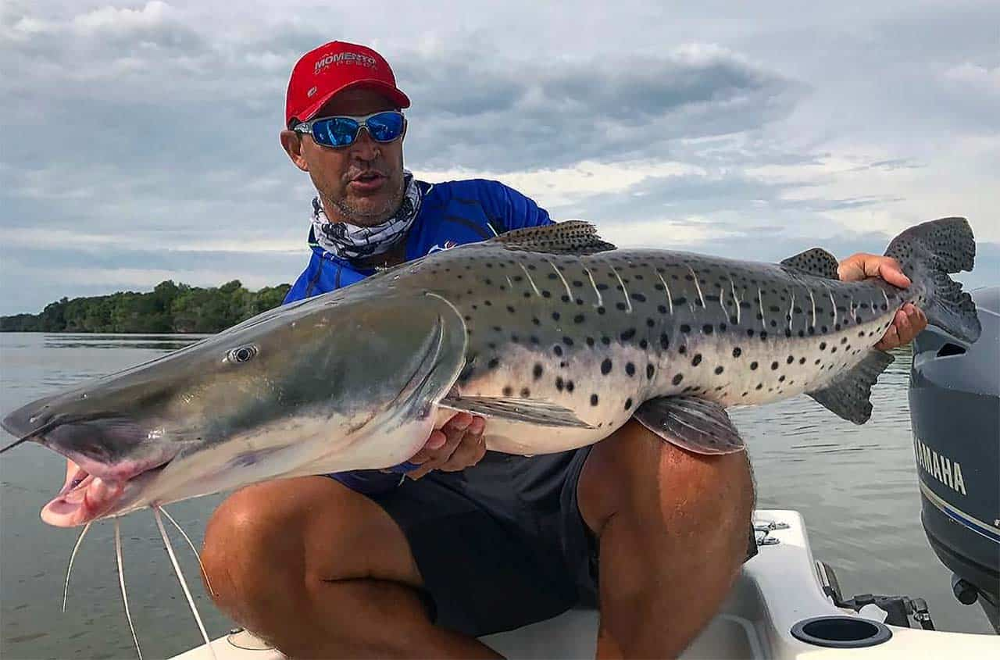
Pirarara (Phractocephalus hemioliopterus)
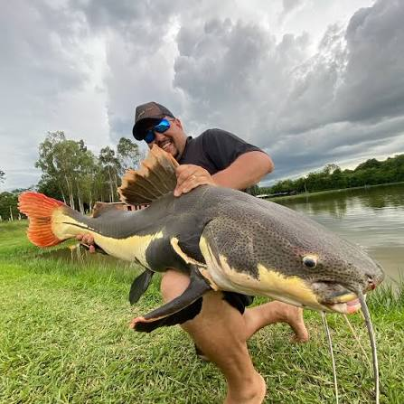
Piau (Megaleporinus)
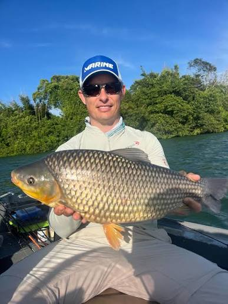
Piranha (Pygocentrus nattereri)
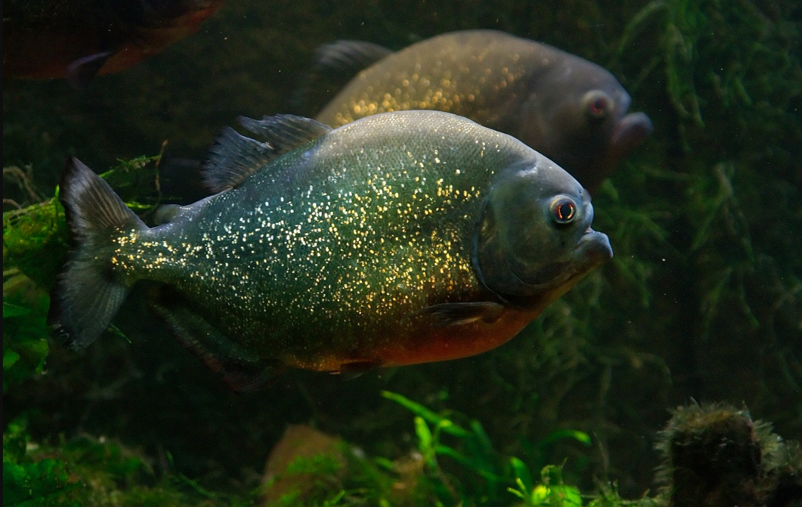
pirarucu (Arapaima gigas)
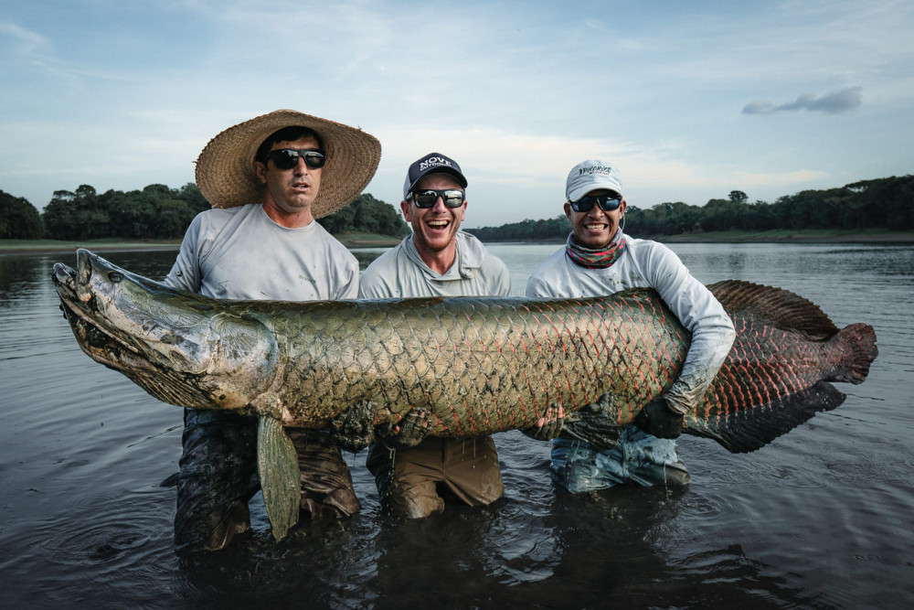